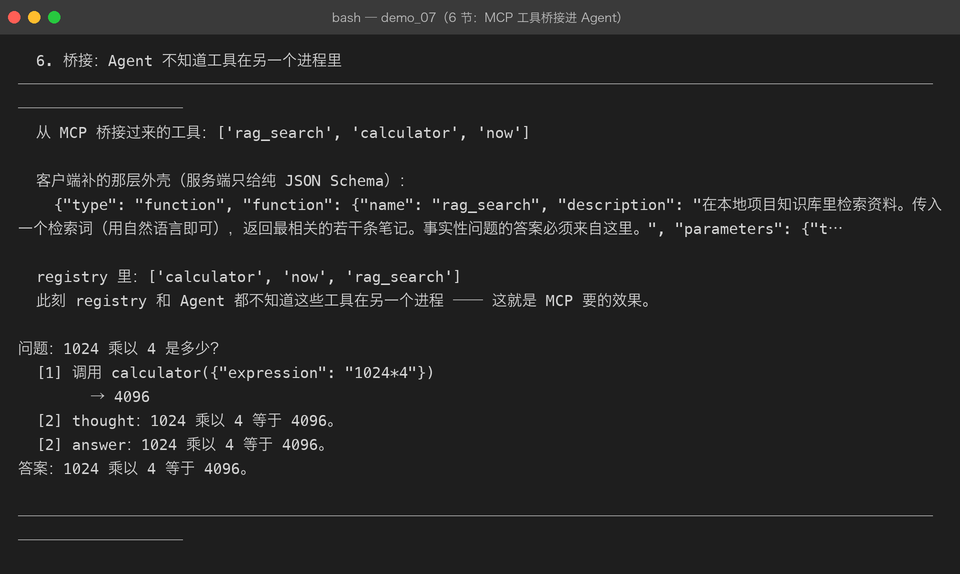
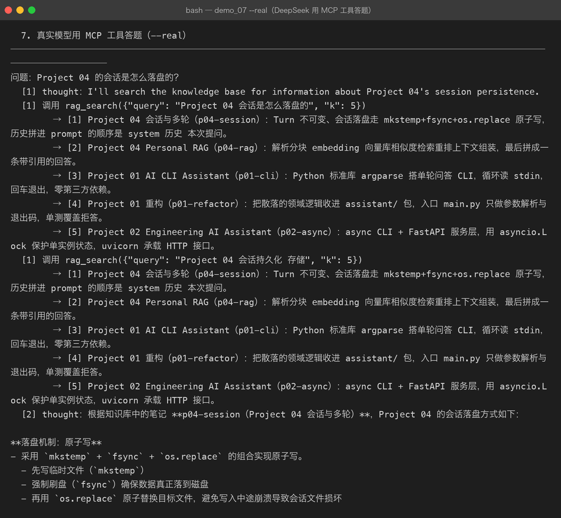

Milestone 09 — MCP Client：让 Agent 用上别人的工具
Milestone 08 把工具提供出去了，这一章是真正去用它。 目标只有一个：让 Agent 调用 MCP 工具时，和调用本地工具没有任何区别。
1. 三步接进来
client = spawn_default_server() # [sys.executable, "-m", "agent.mcp.server"]
client.start()
client.initialize() # 握手
registry = ToolRegistry(mcp_tools(client))做完这三步，Agent 甚至不知道工具在另一个进程里 —— 这就是 MCP 要的效果。
2. 两个形状不一样：客户端负责转换
MCP 的 tools/list 返回的是纯 JSON Schema：
{"name": "rag_search", "description": "...", "inputSchema": {...}}而 LLM 的 function calling 要的是两层外壳：
{"type": "function", "function": {"name": ..., "parameters": {...}}}转换只能由客户端做：
- 服务端不该知道 LLM 的存在（它可能同时服务于别的客户端）
- LLM 也不该知道 MCP 的存在
这个转换层是 MCP 能接进任意模型的关键。
顺带一提：Milestone 03 真机踩过的那个 422（tools[0]: missing field 'type'） 就是漏了这层转换 —— 当时是手写 schema 漏了，这里是协议形状不同。道理一样： 发给模型的东西，形状一定要照模型的规矩来。

3. 握手顺序不能省
initialize → notifications/initialized → 其它方法服务端会在握手前拒绝一切其它调用。跳过 notify 那一步， 表现是「tools/list 返回 method not found」—— 看起来像服务端没实现这个方法，非常误导。
所以 initialize() 内部自己把 notify 发了，调用方不用记得。
4. 真实模型用 MCP 工具答题
用 DeepSeek 问「Project 04 的会话是怎么落盘的？」，工具全部来自 MCP 子进程：

5 步、2 次工具调用，答案准确（mkstemp + fsync + os.replace 原子写、 Turn 不可变、prompt 拼装顺序）。每一次「调用」都是一次跨进程 JSON-RPC 往返， 模型完全不知情。
5. 踩到的坑
这个坑的本质是：两个系统对同一个概念的形状约定不同，而边界上没有统一。 修法是在桥接层补齐外壳，两边都不越界。
坑 2：spawn_default_server() 必须用 sys.executable。 写死 "python3" 会拉起一个没装依赖的解释器，子进程秒退， 而错误信息只是「服务端关闭了连接」—— 现在 _recv() 会把 stderr 一起带出来，才知道为什么。
坑 3：子进程 stdout 要 bufsize=1（行缓冲）。 默认块缓冲会让服务端写完但客户端读不到，表现为双方互相干等。
坑 4：fixture 里忘了 initialize。 测试用 module-scoped fixture 复用一个 client，但只在 start() 后就交给测试用， 结果 9 个测试全报「尚未完成 initialize」。握手必须在 fixture 里完成。
6. 结论
- 客户端是形状转换层：MCP 的纯 Schema ↔ LLM 的 function 外壳，只在这里转换。
- 握手封装进
initialize()，别指望调用方记得发 notify。 - stdio 的三个坑（行缓冲 / flush / 读空带 stderr）只在真进程上出现，mock 一片绿 —— 所以 Client 的测试必须是真子进程，本项目的
live_clientfixture 就是这么做的。
7. 代码位置
| 文件 | 职责 |
|---|---|
src/agent/mcp/client.py | MCPClient / MCPTool / mcp_tools / spawn_default_server |
tests/test_mcp.py | TestClientAgainstRealServer / TestBridge / TestClientLifecycle（11 项，真子进程） |
demos/demo_07_mcp.py | 第 5–7 节，--real 跑真实模型 |
8. 版本
v0.9 → v0.10，MCP Client 落地，Agent 可跨进程调用工具； 真实 DeepSeek 通过 MCP 答对问题；测试 230 passed。